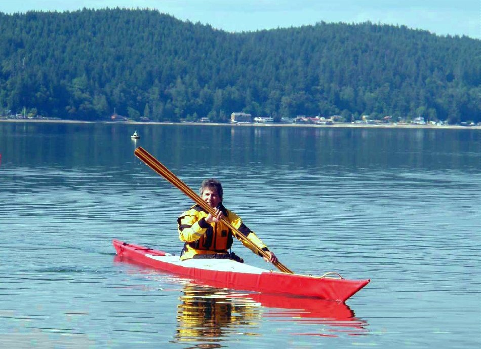

| Sea Rider by Evan (CA) | Menu Previous Page Next Page |
|

Evan, from Canada, displays his Sea Rider folder. His comments..." I launched my Sea Rider at SSTIKS 2009, It's a very fun to paddle kayak and my niece who hadn't kayaked before got her first roll in it. My other niece got her first hand roll. I used arched inwales, a roll closure on the rear deck and a split aluminum coaming."
|
|